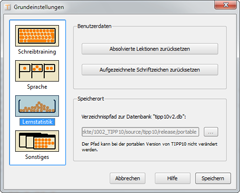

Lernstatistik anzeigen | Inhaltsverzeichnis | ABC-Spiel
Lernstatistik anzeigen | Inhaltsverzeichnis | ABC-Spiel 
7. Grundeinstellungen
Die Grundeinstellungen erreichen Sie über die Menüleiste des Startfensters. Klicken Sie hierfür unter Windows und Linux auf das Menü Datei und dann auf den Unterpunkt Grundeinstellungen. Unter Mac OS klicken Sie bitte auf TIPP10 und dann auf Einstellungen.
Die Grundeinstellungen teilen sich in vier Bereiche: Schreibtraining, Sprache, Lernstatistik und Sonstiges.
7.1 Schreibtraining
Hier können Sie Einstellungen vornehmen, die das Schreibtraining betreffen.
7.1.1 Laufschrift
Sie können Schriftart und -größe, sowie die Farben der Laufschrift im Schreibtraining an Ihre Bedürfnisse anpassen. Klicken Sie dazu auf den jeweiligen Button und wählen Sie dann die gewünschte Schrift bzw. Farbe aus. Beachten Sie, dass eine Schriftgröße von mehr als 20 Punkten nicht empfohlen ist, da sie sonst durch das Laufband oben und unten abgeschnitten wird.
Die Geschwindigkeit, mit der sich die Laufschrift bewegt, können Sie mit einem Regler beeinflussen. Es existieren insgesamt fünf Stufen, standardmäßig befindet sich der Regler in der Mitte. Wenn Sie den Regler mit der Maus ganz nach links verschieben, bewegt sich die Laufschrift gar nicht mehr, befindet sich der Regler ganz rechts, bewegt sich die Laufschrift sehr schnell.
Manche Benutzer empfinden die Laufschrift nach längerem Training als anstrengend und störend. In diesem Fall wird empfohlen, andere Farben auszuwählen oder die Laufschrift ganz auszuschalten (Regler ganz nach links bewegen).
7.1.2 Audioausgabe
Sie können festlegen, ob akustische Signale (für Tippfehler und Metronom) über die Soundkarte oder über den internen PC-Lautsprecher ausgegeben werden sollen. Bei Ausgabe über die Soundkarte werden die Audiodateien error.wav und metronome.wav aus dem Programmverzeichnis abgespielt. Bei Ausgabe über den PC-Lautsprecher kann lediglich ein Piepton erfolgen.
Bei Aktivierung des Metronoms, wird während des Trainings ein Ticken in einem vorgegebenen Zeittakt abgespielt. Dies kann Sie unter Umständen dabei unterstützen, gleichmäßig in einer festen Geschwindigkeit zu tippen. Die Geschwindigkeit können Sie in Anschlägen pro Minute einstellen. Bei beispielsweise 60 Anschlägen pro Minute hören Sie genau einmal pro Sekunde ein Ticken.
7.2 Sprache
Hier können Sie die Sprache festlegen, die für Programmoberfläche, Übungslektionen und das Tastaturlayout verwendet wird.
7.2.1 Programmoberfläche
Die Programmoberfläche von TIPP10 wird derzeit in den Sprachen Deutsch und Englisch angeboten. Über die Listenauswahl können Sie die Sprache ändern.
Beachten Sie, dass diese Einstellung lediglich die Sprache aller Bedienungselemente ändert. Die Sprache der Lektionen können Sie weiter unten anpassen.
Die Änderung der Programmoberfläche erfordert einen Neustart der Software. Sie werden darauf nach dem Speichern der Grundeinstellungen hingewiesen.
7.2.2 Tastaturlayout
TIPP10 unterstützt neben dem deutschen Tastaturlayout auch das Layout der Schweiz, das Layout der USA und die alternativen Tastaturlayouts NEO, Dvorak und RISTOME. In der Listenauswahl können Sie die zu Ihrem Computer passende Tastatur einstellen.
Nachfolgend einige Hinweise zu den unterschiedlichen Tastaturlayouts:
1. Bei dem Tastaturlayout Deutschland | QWERTZ handelt es sich um das normale deutsche Tastaturlayout.
2. Das Windows-Layout unterscheidet sich leicht vom Apple-Layout (Windows- und Apfel/CMD-Tasten, @-Zeichen etc.). Wählen Sie daher die entsprechende Erweiterung Windows oder Macintosh.
3. Bei Auswahl des Tastaturlayouts Schweiz | QWERTZ können Sie zusätzlich noch festlegen, ob es sich um eine deutsch-schweizerische (SG) oder französisch-schweizerische (SF) Tastatur handelt. Außerdem werden im Diktat automatisch alle großen Umlaute und Szet (ß) durch alternative Zeichenfolgen (ß -> ss, Ä -> Ae, Ü -> Ue, usw.) ersetzt!
4. Bei Auswahl des amerikanischen Tastaturlayouts USA | QWERTY werden im Diktat automatisch alle Umlaute und Szet (ß) durch alternative Zeichenfolgen (ß -> ss, Ä -> Ae, ü -> ue, usw.) ersetzt!
5. Alternative Systeme, wie das 1936 erfundene Dvorak-Tastaturlayout des Amerikaners August Dvorak, das 2005 von Jugend forscht preisgekrönte Layout namens RISTOME oder das Tastaurlayout NEO erlauben schnelleres und für die Gelenke gesünderes Tippen. Aufgrund der weiten Verbreitung des QWERTY/Z-Systems und des enormen Aufwands, der für die allgemeine Einführung eines neuen Systems nötig wäre, haben sie sich bislang aber nur in kleinen Kreisen durchgesetzt. Zahlreiche Informationen zu den alternativen Tastaturlayouts finden sich im Internet. Die Unterscheidung zwischen Windows und Macintosh fällt bei den alternativen Layouts weg, da es sich im Normalfall um umgebaute Windows-Tastaturen handelt und kein Unterschied bei der Tastenanordnung besteht.
6. Sollten Sie den Umfang der für das Tastaturlayout verfügbaren Schriftzeichen zusätzlich anpassen wollen, erreichen Sie über den Button Erweitert die Zeichenbegrenzung und den Ersetzungsfilter. Bitte nehmen Sie hier nur Änderungen vor, wenn Sie sich mit regulären Ausdrücken auskennen. Änderungen werden nur solange gespeichert, bis Sie ein anderes Tastaturlayout auswählen. Weitere Erläuterungen werden im Fenster angezeigt.
7.2.3 Übungslektionen
Die Übungslektionen sind im Idealfall genau auf das jeweilige Tastaturlayout abgestimmt, damit die einzelnen Tasten von der Grundstellung ausgehend schrittweise erlernt werden können. Sie können zwar auch z.B. an das deutsche QWERTZ-Layout angepasste Übungslektionen mit dem amerikanischen QWERTY-Tastaturlayout trainieren, müssen dann aber unter Umständen von Beginn an Tastwege zurücklegen.
TIPP10 bietet derzeit deutsche Übungslektionen für die Tastaturlayouts QWERTZ und NEO 2.0 und englische Lektionen für das amerikanische QWERTY-Layout an. Diese können Sie die über die Listenauswahl einstellen.
7.3 Lernstatistik
Hier können Sie die Lernstatistik verwalten.

7.3.1 Benutzerdaten
Über den Button Absolvierte Lektionen zurücksetzen können Sie alle Lektionendaten löschen, die während des Schreibtrainings in die Datenbank gespeichert wurden. Es handelt sich hierbei um alle Ergebnisse der Lektionen, also welche Lektionen trainiert und wie diese bewertet wurden. Die Lektionenliste und der Verlauf der Lektionen in der Lernstatistik werden danach leer angezeigt, wie nach der Installation von TIPP10.
Der Button Aufgezeichnete Schriftzeichen zurücksetzen bewirkt, dass alle Fehlerquoten der Schriftzeichen entfernt werden. Es bleibt zwar erhalten, wie viele Fehler in einer Lektion gemacht wurden (diese Information wird über den Button Absolvierte Lektionen zurücksetzen gelöscht), jedoch wird zurückgesetzt, welche Schriftzeichen Sie am häufigsten falsch getippt haben. Die Liste der Schriftzeichen und die Darstellung der Finger in der Lernstatistik wird nach dem Löschvorgang leer dargestellt und die Intelligenzfunktion reagiert erst auf wieder neu entstehende Tippfehler.
Wenn Sie beide Lösch-Vorgänge durchführen, befindet sich die Datenbank wieder in dem Zustand, in dem sie sich direkt nach der Installation befunden hat.
7.3.2 Speicherort
Im Bereich Speicherort können Sie festlegen, wo sich auf Ihrer Festplatte die TIPP10-Datenbank tipp10v2.db befindet. Standardmäßig wird die Datenbank beim ersten Programmstart im HOME-Verzeichnis des Benutzers angelegt. Bei der portablen Windows-Version von TIPP10 wird die Datenbank grundsätzlich im Programmverzeichnis abgelegt, hier kann der Pfad nicht verändert werden.
Bei Windows ist das Verzeichnis normalerweise unter folgendem Pfad zu finden:
C:\Dokumente und Einstellungen\Benutzername\Anwendungsdaten\TIPP10\
Bei Mac OS ist das Verzeichnis normalerweise unter folgendem Pfad zu finden:
/Users/Benutzername/Library/Application Support/TIPP10/
Bei Linux ist das Verzeichnis normalerweise unter folgendem Pfad zu finden:
/home/Benutzername/TIPP10/
Im Ordner TIPP10 liegt dann die Datenbankdatei tipp10v2.db. Beachten Sie, dass bei der Pfadeingabe lediglich das Verzeichnis angegeben wird. Die Datenbankdatei selbst wird nicht eingegeben. Wenn Sie ein leeres Verzeichnis angeben, wird automatisch eine neue, leere Datenbank erzeugt.
Weitere Informationen zur Handhabung der Datenbank finden Sie im Kapitel 2.3.
7.4 Sonstiges
Hier können Sie Einstellungen vornehmen, die die Programmbenutzung und den Umgang mit Informationsfenstern betreffen.
7.4.1 Fenstereinstellungen
Die erste Option bestimmt, ob nach dem Programmstart ein Fenster angezeigt werden soll, das Programmhinweise und Tipps zu Anwendung des Zehnfingersystems beinhaltet.
Die zweite Option entscheidet, ob der Benutzer einen Hinweis erhalten soll, wenn eine freie oder eigene Lektion mit aktivierter Intelligenz gestartet wird.
Die dritte Option legt fest, ob die Dauer der Lektion automatisch auf Gesamte Lektion springen soll, wenn bei einer freien oder eigenen Lektion die Intelligenz deaktiviert wird. TIPP10 merkt sich, ob Sie die Intelligenz aktiviert haben und setzt die Dauer auch auf Gesamte Lektion, wenn Sie nur zu den freien oder eigenen Lektionen über das Register wechseln. Wünschen Sie dieses Verhalten nicht, deaktivieren Sie die Option.
7.4.2 Sonstiges
Bei der ersten Option können Sie bestimmen, ob TIPP10 einmal pro Woche beim Programmstart auf eine neue Softwareversion prüfen soll. TIPP10 stellt dazu eine Anfrage über das Internet und informiert Sie, wenn eine neue Version vorliegt.
Aktivieren Sie die zweite Option, wenn die Software mit der nativen Programmoberfläche dargestellt werden soll. TIPP10 verwendet dann für alle Steuerelemente das Oberflächendesign des Betriebssystems.
 Lernstatistik anzeigen | Inhaltsverzeichnis | ABC-Spiel
Lernstatistik anzeigen | Inhaltsverzeichnis | ABC-Spiel 
© 2006-2011 Tom Thielicke IT Solutions